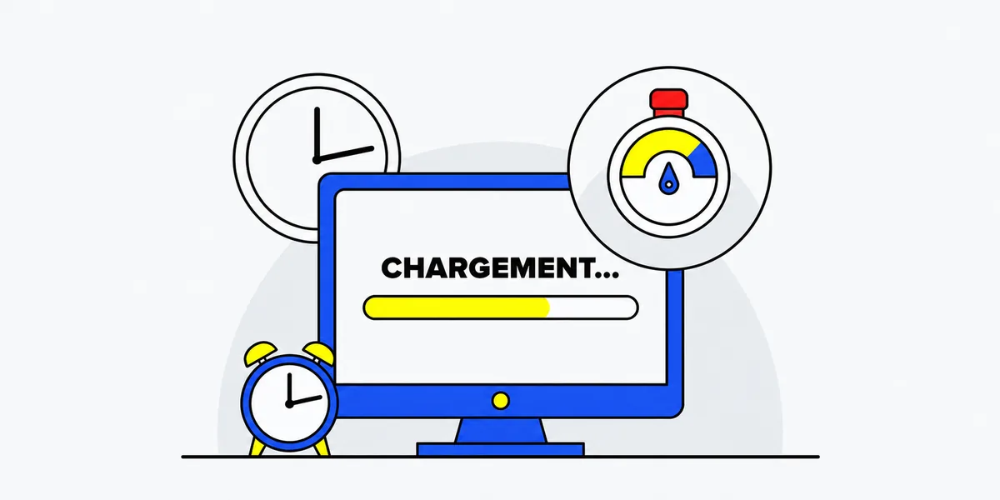
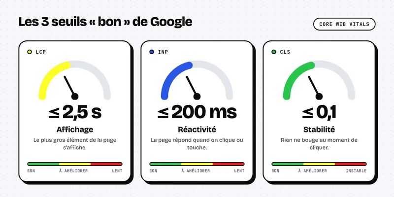

Vous avez investi dans un beau site, mais les demandes n’arrivent pas ? Il y a une cause fréquente, et discrète : la lenteur. Un visiteur qui attend trop longtemps sur son téléphone, dans le tram ou entre deux rendez-vous, ferme la page et passe au concurrent. Bonne nouvelle : la vitesse se mesure, et elle s’améliore avec des actions simples.
Dans cet article, nous vous expliquons ce que Google regarde, comment tester votre site gratuitement et quelles actions mener en priorité.
Pourquoi la vitesse compte pour votre activité
Un site rapide rassure. Il donne une image sérieuse, surtout à un client qui découvre votre entreprise. À l’inverse, un site qui rame laisse penser que l’entreprise est peu soignée.
La vitesse influence aussi votre visibilité. Google mesure l’expérience réelle des visiteurs avec les « Core Web Vitals », un ensemble d’indicateurs. Ils font partie des signaux pris en compte pour le classement, aux côtés de nombreux autres, comme la qualité du contenu. Autrement dit : la vitesse ne remplace pas un bon contenu, mais elle évite de gâcher son effet.
Les trois indicateurs à connaître
Pas de panique, ils sont plus simples qu’il n’y paraît :
- LCP (Largest Contentful Paint) : le temps d’affichage du plus gros élément de la page, souvent une image ou un titre. Seuil « bon » : 2,5 secondes ou moins.
- INP (Interaction to Next Paint) : la réactivité quand on clique ou touche l’écran. Seuil « bon » : 200 millisecondes ou moins.
- CLS (Cumulative Layout Shift) : la stabilité visuelle. Avez-vous déjà cliqué sur un bouton qui a bougé au dernier moment ? C’est ce que mesure le CLS. Seuil « bon » : 0,1 ou moins.
Ces seuils sont évalués sur les données de vrais visiteurs : une page est jugée « bonne » lorsque 75 % de ses visites respectent le seuil (critères publiés par Google).

Étape 1 : mesurer avant de modifier
Inutile de deviner. Deux outils gratuits suffisent :
- PageSpeed Insights (Google) : saisissez l’adresse de votre page et lisez les résultats mobile.
- Google Search Console : le rapport « Expérience » signale les pages à problème sur l’ensemble du site.
Testez toujours la version mobile en premier. En Suisse romande, une grande partie des recherches locales se fait depuis un téléphone, souvent avec une connexion variable.
Étape 2 : alléger les images
C’est la cause la plus courante de lenteur. Une photo prise avec un smartphone, mise en ligne telle quelle, peut peser très lourd. Retenez trois règles :
- redimensionner l’image à la taille réellement affichée ;
- utiliser un format moderne comme WebP ;
- charger les images en différé (« lazy loading ») lorsqu’elles sont plus bas dans la page.
Exemple : un restaurant des Pâquis qui présente sa carte et douze photos de plats gagnera souvent beaucoup de temps rien qu’en traitant ses images.
Étape 3 : faire le ménage dans les extensions et scripts
Chat en ligne, pixels publicitaires, carrousels, polices en tout genre : chaque ajout alourdit la page. Posez-vous la question pour chacun : « Est-ce qu’il m’apporte des clients ? » Si la réponse est non, supprimez-le. Sur WordPress, les extensions inutilisées sont un classique.
Étape 4 : choisir un hébergement adapté
Un hébergement bon marché partagé avec des centaines de sites peut ralentir votre serveur aux heures de pointe. Pour une clientèle suisse, privilégiez un serveur situé en Suisse ou en Europe, avec un système de cache. Cela réduit le délai de réponse et facilite aussi la conformité en matière de données.
Étape 5 : stabiliser la mise en page
Pour éviter les déplacements d’éléments, indiquez toujours la largeur et la hauteur des images, réservez la place des bannières (cookies, publicités) et limitez le nombre de polices. Votre CLS s’en ressentira immédiatement.
Conclusion : parlons de votre site
Un site rapide, c’est moins de visiteurs qui repartent et plus de demandes pour votre entreprise. Chez Websituation, nous concevons des sites pensés pour la performance dès le départ, avec un suivi dans la durée.
Réservez un rendez-vous gratuit, ou découvrez nos formules en abonnement.
FAQ
Mon site est-il trop lent ?
Testez-le avec PageSpeed Insights sur mobile. Si le LCP dépasse 2,5 secondes, il y a une marge d’amélioration.
Dois-je refaire tout mon site ?
Pas forcément. Souvent, l’optimisation des images et la suppression de scripts inutiles suffisent. Une refonte se justifie si la base technique est trop ancienne.
La vitesse suffit-elle pour bien se classer sur Google ?
Non. Le contenu, la pertinence locale et la fiabilité restent essentiels. La vitesse est un levier parmi d’autres, mais elle améliore aussi vos conversions.
À lire aussi
Tous les articles

Un projet de site ou de visibilité ?
Un premier rendez-vous gratuit pour faire le point sur vos besoins et votre budget.
Prendre rendez-vous